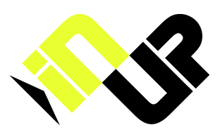

|  |
| Back |
|
Our competences.
Linux kernel developments (kernel fuctions, drivers, ...). We can study and implement all system developments integrated into Linux. We have a perfect mastering of our own Linux port to the PowerPlus series from Motorola. We programmed a lot of Linux driver types for VME, CompactPCI or ATX motherboards. PowerPlusLinux distribution. We have our own Linux distribution, so it is easy for us to validate either system and user level software. PowerPlusLinux is based on the RedHat distribution with few changes, this is a plus in terms of reliability, easy setup and system administration. Unix developments (PowerPlusLinux). Our knowledge of UNIX and POSIX standards allows us to study and realize pieces or totality of applications. The most used programming languages are included in our distribution : C, Java, FORTRAN, ... Ports of applications to Linux. We can help you to port your existing applications under Linux on our systems or even do the whole port ourself. We can also modify Linux free applications to fit your needs. |
|
© INUP 1999 The INUP name and logo are registered trademarks of INUP. |